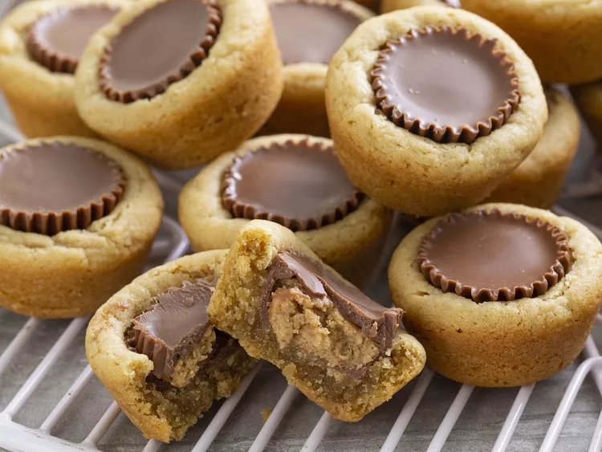

Peanut Butter Cookies Recipe

Description
You'll be shocked how easy it is to make these peanut butter cookies. The
full, step-by-step recipe is below — but here's a quick overview of what
you can expect:
Ingredients
- 1 ¾ cups all-purpose flour
- ½ teaspoon salt
- T1 teaspoon baking soda
- ½ cup butter, softened
- ½ cup white sugar
- ½ cup peanut butter
- ½ cup packed brown sugar
- 1 egg, beaten
- 1 teaspoon vanilla extract
- 2 tablespoons milk
- 40 miniature chocolate covered peanut butter cups, unwrapped
Steps
-
Preheat oven to 375 degrees F (190 degrees C). Sift together the flour,
salt and baking soda; set aside.
-
Cream together the butter, sugar, peanut butter and brown sugar until
fluffy. Beat in the egg, vanilla and milk. Add the flour mixture; mix
well. Shape into 40 balls and place each into an ungreased mini muffin
pan.
-
Bake at 375 degrees for about 8 minutes. Remove from oven and
immediately press a mini peanut butter cup into each ball. Cool and
carefully remove from pan.
homepage